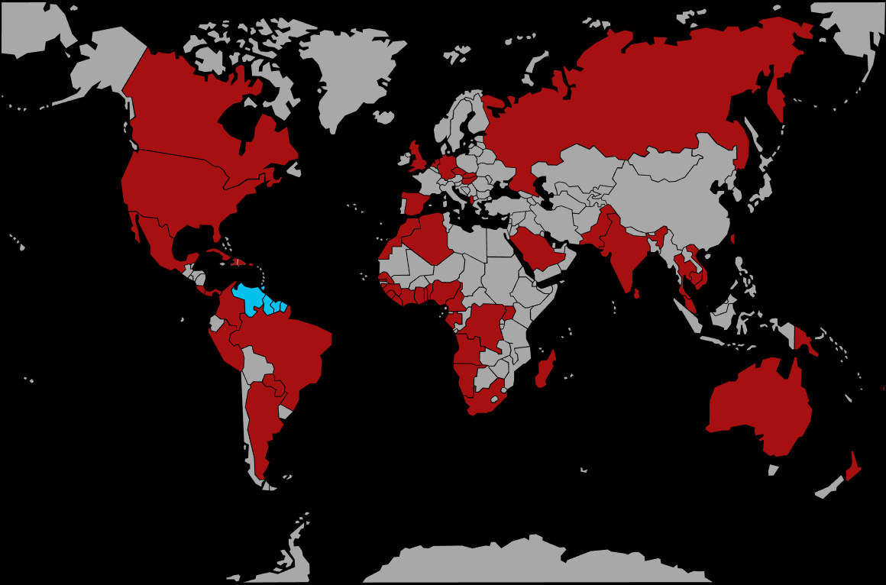

Systématique
- Ordre : Cyprinodontiformes
- Famille : Poeciliidae
- Genre : Poecilia
- Espèce : Poecilia reticulata
Poecilia reticulata est un petit vivipare extrêmement répandu en aquariophilie, réputé pour sa facilité de maintenance et la diversité de ses formes et couleurs.
Les mâles mesurent en général 3 à 4 cm, contre 5 à 6 cm pour les femelles, avec une espérance de vie de 2 à 3 ans en bonnes conditions.
Espèce très active et sociable, Poecilia reticulata occupe surtout les zones médianes et superficielles du bac, en groupes mixtes où les mâles courtisent en permanence les femelles.
Un ratio avec davantage de femelles que de mâles limite le harcèlement, et un décor bien planté offre des refuges aux individus dominés et aux alevins.
Mode : vivipare ; après une gestation d’environ 4 semaines, la femelle met au monde plusieurs dizaines d’alevins entièrement formés, sans soins parentaux.
Les jeunes sont rapidement autonomes mais peuvent être consommés par les adultes ; un fort couvert végétal ou un bac spécifique facilite leur survie et la sélection des lignées.
Dimorphisme sexuel : mâle plus petit, très coloré, avec gonopodium ; femelle plus grande, plus trapue, nageoire anale triangulaire et tache de gestation sombre près de l’anus.
Espérance de vie : 2 à 3 ans en moyenne, parfois un peu plus dans une eau stable, propre et bien oxygénée.
Dans la nature, l’espèce occupe de petits cours d’eau, fossés, canaux et zones calmes de rivières en Amérique du Sud et dans les Caraïbes, souvent en eaux légèrement dures à alcalines, parfois saumâtres.
Répartition
Origine naturelle :
- Nord‑est de l’Amérique du Sud (Venezuela, Guyana, Suriname, nord du Brésil).
- Trinidad, Tobago et autres îles voisines.
L’espèce a été largement introduite dans de nombreux pays tropicaux et subtropicaux, où elle s’est souvent naturalisée dans les eaux douces peu profondes.
Paramètres de maintenance
Température : 22 à 26 °C (tolère environ 20–28 °C).
pH : 7,0 à 8,0, un milieu légèrement alcalin étant apprécié.
GH : 8 à 20 °dGH, eau moyenne à dure.
Courant : faible à modéré, dans une eau propre et bien oxygénée.
Volume conseillé : à partir de 60 L pour un petit groupe, idéalement 80–100 L ou plus pour une population stable.
Régime alimentaire
Régime : omnivore à forte composante végétale ; accepte flocons, granulés, spiruline, légumes pochés et petite nourriture vivante ou congelée (artémias, daphnies, larves de moustiques).
Une alimentation variée, distribuée en plusieurs petits repas, favorise de belles couleurs, une bonne fécondité et limite les problèmes de santé liés aux excès de protéines animales.